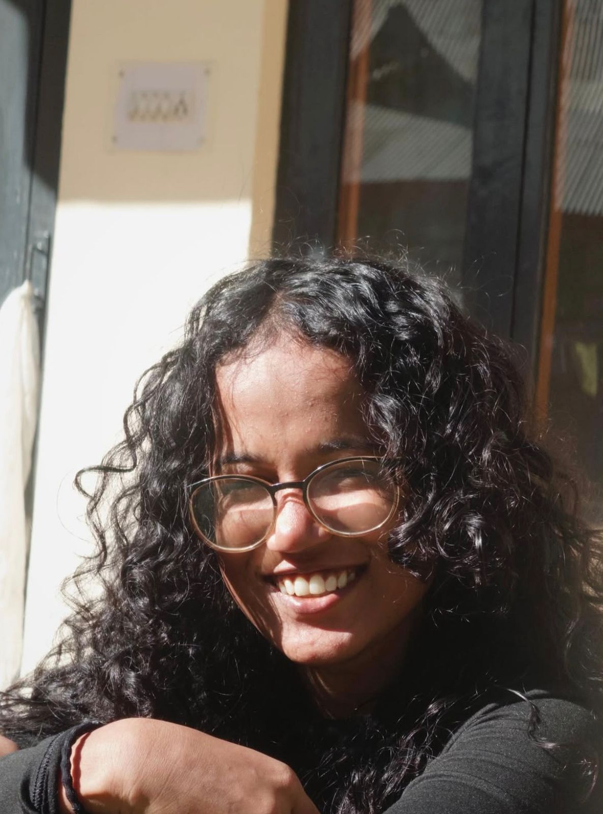
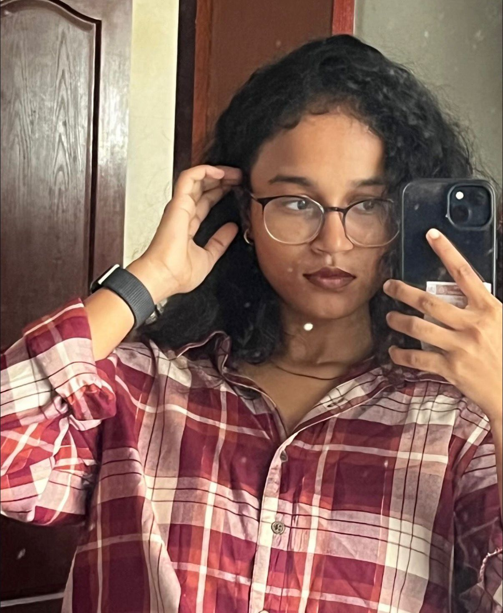
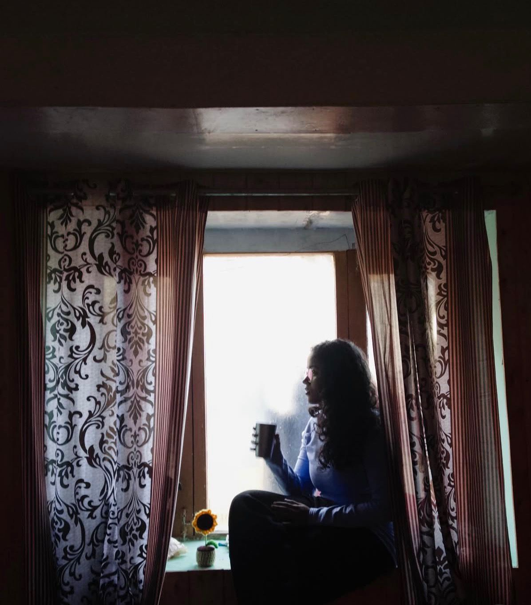

Unseen Chennai carousels
Batch-created carousel content that helped grow the channel from 336K to 356K followers.
View project →I turn ideas into engaging content that connects brands with the right audience and drives real impact — carousels, campaigns and AI-generated video, one story at a time.


The person behind the captions ✎
works on a coffee (or ten)I’m a word artist (Others say, content writer) With a MBA in Digital Marketing, I help professionals transform their ideas into impactful content, building authentic audience and boosting their personal brands. With hands-on experience in managing content for diverse brands, I know what pops and what flops.
I'm comfortable working across the entire content pipeline: managing content calendars, analysing performance metrics, and adapting brand voice across platforms and formats.
Profile makeovers and ghostwritten posts that make you sound like the expert you already are.
Strategy, captions and a content plan you'll actually stick to — so the feed never goes quiet for three weeks.
Website copy, blogs and newsletters — your brand's story, told in words people finish reading.
Brand campaign concepts built with Kling AI, Google Veo 3 and Seedance — prompting and creative direction included.
a running archive, not a highlight reel ✎
Batch-created carousel content that helped grow the channel from 336K to 356K followers.
View project →Reels and content for a fitness creator across Instagram & YouTube.
View project →An AI-generated campaign video produced for a SaaS company to streamline creative ideation.
View project →Scheduled and optimised calendars for 4+ agency clients.
View project →Pre-production content across 20+ brands at Novaris Digital.
View project →Concept visuals generated with Kling AI, Google Veo 3 and Seedance.
View project →Kanishka is one of the most humble and genuinely helpful people I’ve come across. I reached out to her for advice on my LinkedIn profile and content strategy, and she generously gave me her time and attention. We spoke for over an hour, and she patiently answered all my questions with immense depth and clarity.
Her understanding of content is simply next level — it’ll truly blow your mind.
But here’s a little heads-up: only reach out if you’re ready for a serious upgrade. Because once Kanishka steps in, your social game won’t stay the same — she can truly work wonders.
I am very delighted to recommend Kanishka,
To tell about Kanishka’s unique talent, she is always fond of reading books and recommending some to others, which shows her passion for learning something new. Kanishka has significantly grown into a highly skilled writer, and the way she convey her complex creative ideas in a clear and an engaging manner shows it, I would say that this is her strongest asset. Her passion, creativity, and strong work ethic will undoubtedly lead her to great success.
I highly recommend Kanishka for any opportunity in digital marketing or content creation. She will definitely be a valuable asset to any team.
Best regards,
Shruthi Kamalakannan
I highly recommend @Kanishka Raju for her strong dedication to growing as a content writer and helping us do the same. Her meticulous approach to tasks and posts ensured accuracy and high-quality results. Kanishka consistently demonstrated a growth mindset through her value-adding content for us all, and I admire how she eagerly seeks opportunities to expand our skills and knowledge in numerous ways.
Have a project in mind? Let's create something impactful together.